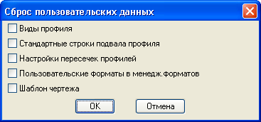

оманда: geo_tools_update_user_date
оманда: geo_tools_update_user_dateѕриводит пользовательские данные к параметрам по умолчанию
«амещает файлы в папке хранени€ пользовательских настроек на их копии в основном каталоге Geo Tools.
оманда: geo_tools_update_user_date


 —тавит галочки напротив типа данных которые нужно вернуть к значению по умолчанию.
—тавит галочки напротив типа данных которые нужно вернуть к значению по умолчанию.